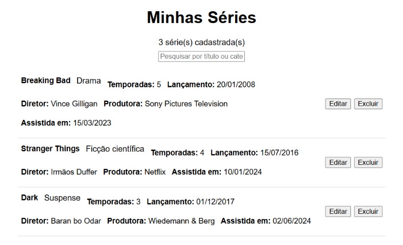
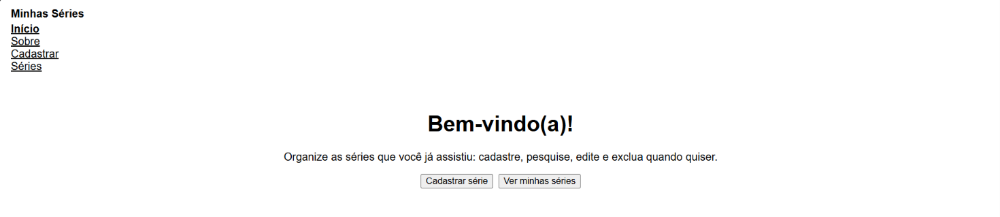
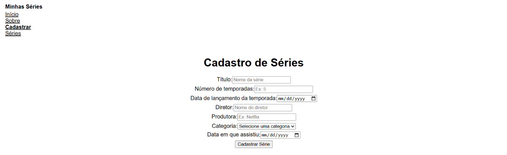

Fase 1 • 2026
Minhas Séries
Uma aplicação em React para cadastrar e organizar as séries que você assistiu: cadastro, lista com busca, edição e exclusão.

O que a aplicação faz
A aplicação tem cinco telas, ligadas por uma barra de navegação que destaca a página atual:
- Início e Sobre, que apresentam a aplicação;
- Cadastro, com o formulário de uma nova série: título, número de temporadas, data de lançamento da temporada, diretor, produtora, categoria e data em que assistiu;
- Séries, com a lista de todas as séries, uma busca por título ou categoria e os botões de editar e excluir em cada item;
- Editar, que abre o mesmo formulário já preenchido com os dados da série.
Validação do formulário
Antes de salvar, o formulário confere se todos os campos foram preenchidos, se a série tem pelo menos uma temporada e se a data em que foi assistida não é anterior à data de lançamento. Os campos com erro ficam destacados em vermelho, cada um com a sua mensagem, e o erro some assim que o campo é corrigido. Ao salvar, aparece uma mensagem de sucesso. Antes de excluir uma série, a aplicação pede confirmação.
Como organizei o código
A lista de séries fica em um único estado no componente App, junto com as funções de adicionar, atualizar e excluir. Esses dados e funções descem por props para as páginas, então todas as telas mostram sempre a mesma informação.
Separei a interface em três componentes: NavBar, SerieForm e SerieList. O SerieForm é usado tanto no cadastro quanto na edição. Ele recebe opcionalmente a série a ser editada, assim não precisei escrever dois formulários. A navegação usa o React Router, que troca de tela sem recarregar a página e por isso não perde os dados.
Sobre esta fase
Esta é a Fase 1 do projeto, focada no front-end. Ainda não há back-end: a aplicação começa com três séries de exemplo, e as alterações ficam só na memória, voltando ao estado inicial quando a página é recarregada.
Outras telas


Como rodar
Com o Node.js instalado, dentro da pasta do projeto:
npm install
npm run dev